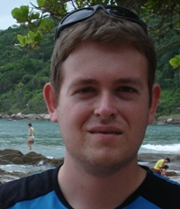

Desenvolvido por Regis Leandro Sebastiani durante o curso de Mestrado em Ciências da Saúde do Programa de Pós-Graduação em Ciências da Saúde da Universidade Federal de Ciências da Saúde de Porto Alegre.

O trabalho contou com a orientação das professoras Cecília Dias Flores e Alessandra Dahmer.
Colaboraram como desenvolvedores Tiago Masotti Uriartt e Michele Silva
Professores e alunos do corpo doscente dos cursos de medicina da UFCSPA proporcionaram contribuições fundamentais para o desenvolvimento deste projeto.